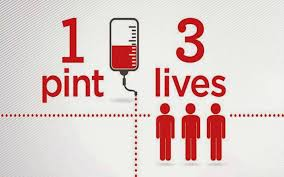

-
A blood donation is truly an altruistic gift that an individual can give to others in need. In only 45-60 minutes, an eligible individual can donate one unit of blood that can be separated into four individual components that could help save multiple lives.
-
From one unit of blood, red blood cells can be extracted and used to treat patients who lost blood due to trauma or those who are recovering from surgery. Plasma, the liquid part of blood, is typically administered to patients with requiring treatment to improve blood clotting. Platelets, a third component, clot the blood when cuts or other open wounds occur, and are often used in the treatment of patients with cancer or those undergoing organ transplants. Finally, cryoprecipitated anti-hemophilic factor (AHF) is also used for clotting factors.
-
A study supported by AABB's National Blood Foundation (TRANSFUSION 2002;42:122S) surveyed more than 5,000 blood donors to find out more about why they donate blood. Nearly 75% of the respondents said that they give blood to help others. Respondents also said that giving blood makes them feel good about themselves, supports their local communities and hospitals, supports their community, and “pays back” society for the times when they or their families have needed blood transfusions in the past.
-
AABB encourages those who are eligible to donate blood or blood components regularly to ensure that this lifesaving resource is available for patients whenever and wherever it is needed.
